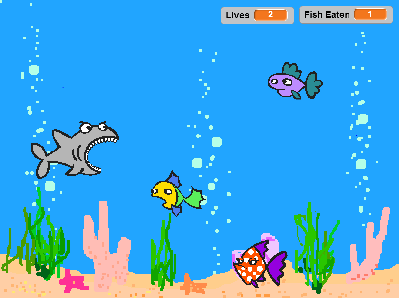
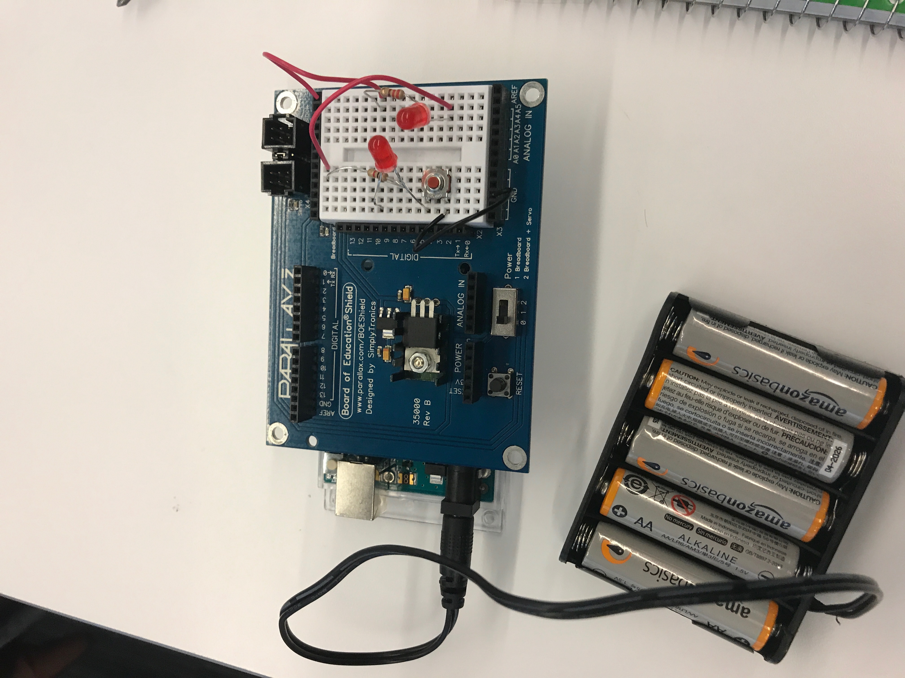

I am a juinor at El Segundo High School. I joined Girl's Who Code to learn Python.
Likes:
Dislikes:
FuN FAcT: Im five foot and three quarters of an inch tall. ;)
Click here for my favorite link ever

Mine and Pheobe's side scroller game: 
6/29/2017: Core 4- THe core 4 is made up of loops, functions, variables, and conditionals. Loops repeat lines of code without having to write it out many times. Functions hold multiple lines of code and turns it into one block. Conditionals control when code runs through if statements and more. Variables are set to values.
6/30/2017: A list is a series of unorganized data. I only find it useful if you need some kind of random generator. The smaller groups worked better, because they got distracted less. I think the first group for using list's we worked the best. This is because we were independent, and I like working independently.
7/5/2017:  My ideas of robotics changed by identifying what a robot can be. I'm excited to see what hard tasks robots can take over. I'm nervous robots will take over the world. Our group for circuits worked well together because we all had knowledge of circuits beforehand. Next tim we could make a better use of our time.
7/6/2017: Manuela's work and Ayanna's work both have robotics in common. They both love creating robots for fun.
7/11/2017: I did not learn anything new about circuits because I learned about them in school. My favorite part of our robot's dance was the zig zag moment backwords. Manuela Veloso and Ayanna Howard need both digital and analog outputs for their robots.